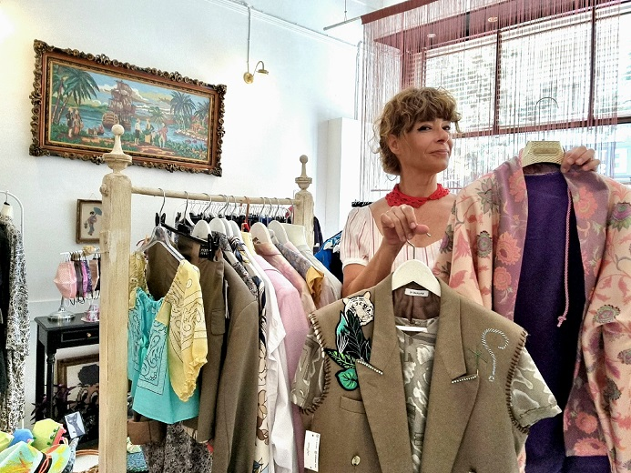

Lifesharing
Η επανάσταση των γυναικών ξεκινάει και… από την ντουλάπα! Η «MAdAME KI» μάς αποκαλύπτει τον τρόπο
A long-form conversation on Elena's path in fashion, from early industry experience to creating a distinct styling identity through second-hand and reworked pieces.
Read Interview